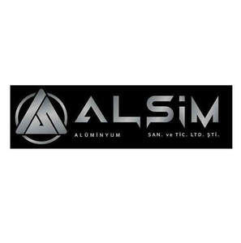

Trade Mark Journal No.2025/018 2 May 2025
UK00004189075 15 April 2025 (6)

- Class 6
- Ordinary metals and their alloys and semi-finished products: rebar; common metal mesh and stirrups for construction; common metals in sheet, billet, bar, profile, plate, sheet; Materials made of metal for sieving, filtering and similar purposes; Metal cables, wires not for electricity; Ventilation ducts, grilles, culverts, culvert covers, chimneys, chimney caps, manhole covers, gratings for ventilation, heating, sewerage, telephone, underground electrical and air conditioning installations made of metal; Pipes, drill pipes and fittings for the transportation of liquids or gases, made of metal: valves, sleeves, elbows, clips, extensions, of metal; Railway materials made of metal: rails, rail joints, turnouts; Metal molds for casting (except for machine parts); Caps made of metal, bottle caps; Metal pallets for lifting, loading and transporting, metal ropes, metal slings, ties, columns, straps, belts, bands and strips for lifting and transporting loads; Profile slats made of metal for vehicles (for decoration); Non-precious mineral ores; Ordinary metals and their alloys and semi-finished products: rebar; common metal mesh and stirrups for construction; common metals in sheet, billet, bar, profile, plate, sheet; Materials and tools made of metal for sheltering, storing, preserving, covering, wrapping, enclosing, enclosing, storing, placing: structures made of metal, building frames and posts made of metal, metal boxes, metal packaging, aluminum foil, metal fences, railings, metal tubes, metal containers, metal warehouses, metal shipping crates, metal portable ladders; Materials made of metal for sieving, filtering and similar purposes; Doors and windows, shutters, blinds, frames and components made of metal; Metal cables, wires not for electricity; Hardware articles of metal: screws, nails, bolts, nuts, pins, washers, metal pitons for climbers, chains, metal furniture fittings and wheels, industrial metal wheels, door and window handles, metal hinges, espagnolettes, metal locks, lock keys, metal key rings, metal rollers; Ventilation ducts, grilles, culverts, culvert covers, chimneys, chimney caps, manhole covers, gratings for ventilation, heating, sewerage, telephone, underground electrical and air conditioning installations made of metal; Materials made of metal for indication, orientation, indication, identification: signs, boards, license plates, non-illuminated traffic direction signs made of metal; Pipes, drill pipes and fittings for the transportation of liquids or gases, made of metal: valves, sleeves, elbows, clips, extensions, of metal; Coin safes; Railway materials made of metal: rails, rail joints, turnouts; Metal pier bollards and buoys, metal pontoons, anchor anchors for marine vessels; Metal molds for casting (except for machine parts); Works of art made of base metals or their alloys; trophies given in competitions made of common metal; Caps made of metal, bottle caps; Mine poles, mine posts, mine scaffolds, mine scaffolds, mine piles, mine towers; Metal pallets for lifting, loading and transporting, metal ropes, metal slings, ties, columns, straps, belts, bands and strips for lifting and transporting loads; Metal chocks for vehicle wheels; Profile slats made of metal for vehicles (for decoration); .
ALSİM GRUP ALÜMİNYUM İTHALAT İHRACAT SANAYİ VE TİCARET LİMİTED ŞİRKETİ
Representative: Zeynel Güney